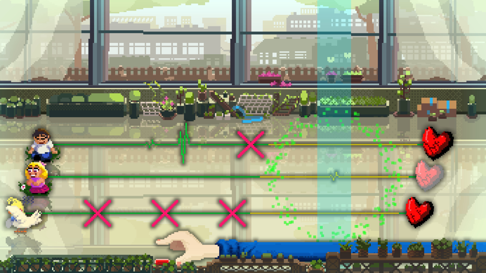

리듬 게임
21,500원
8시간~10시간
Rhythm Doctor는 플레이어가 병원의 의사가 되어 다양한 심장 질환을 가진 환자들을 치료하는 리듬 게임이다. 게임의 기본 규칙은 매우 단순하다. 음악의 7번째 박자에 맞춰 버튼 하나만 누르면 된다. 하지만 곡이 진행될수록 박자가 꼬이거나, 화면이 회전하거나, 시야가 제한되는 등 다양한 기믹이 등장해 난이도가 높아진다. 각 환자는 저마다의 사연과 고민을 가지고 있으며, 치료 과정에서 펼쳐지는 스토리를 통해 캐릭터들의 성장과 관계를 지켜볼 수 있다. 단순한 리듬 게임을 넘어 감동적인 이야기와 독창적인 연출을 함께 즐길 수 있는 작품이다.
7th Beat Games
인게임 캡처